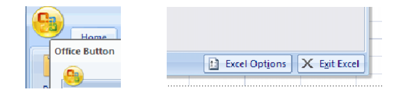
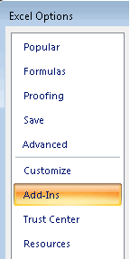
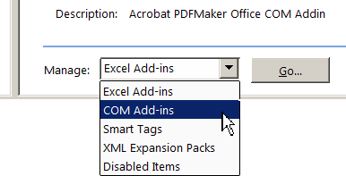

If you want to
disable the Add-In within Excel, without removing the installation,
follow the instructions in this section.
Procedure
- Open Microsoft Excel (2007/2010/2013)
and click the Office Button.
- Select Excel Options.
Figure 1. Office button and
Excel Options
The Excel Options dialog box
opens with a menu of options.
- Select Add-Ins from the options
menu.
Figure 2. Excel Options menu
- At the
bottom of the dialog, in the Manage: drop
down box, choose COM Add-ins and select Go….
Figure 3. Excel Manage dropdown menu
This opens a dialog entitled
COM Add-Ins.
- Un-check
the box marked Questa Excel Add-in and click OK.
This disables the Questa Excel
Add-In, removing the Questa tab from the ribbon bar.